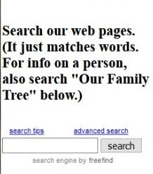

Our Website
Our family history website has more than 500 pages of old letters, photos, news clips, family records, etc. But searching it can present problems. Page one of this "guidebook" covered the basics of using our site's search engine, FreeFind.
This page covers more advanced search techniques, that may be useful to someone who does a lot of searches -- or who has very specific or very complex search needs.
A third page, "Case Studies", covers actuall searches people made, and discusses alternate search queries that might have produced better results for them
Our Site Specific Search Engine
 As discussed on Page 1, the search window is located at the upper left of our website's home page. We can do a lot, just using its search box.
RECAP
ANDs and ORs. You learned that if you type in cat dog pig, it will give you a list of all the web pages that contain the word 'cat', or the word 'dog', or the word 'pig'. You also learned to do "AND" searches, not just OR searches. That If you wanted all the web pages that contained the word 'Robert' and also the word 'Lugg' you could use the plus sign. E.g. by typing +robert +lugg in the search box you'd get an AND search.
PHRASES. You learned that you can search for a phrase, such as Robert Lugg, by entering "robert lugg", enclosed in quotes, into the search box. That will give you all occurrences of the word 'Robert' followed immediately by the word 'Lugg'. We have a Robert Preston Lugg in the family tree plus a Robert Samuel Lugg and a Robert Sherer Lugg. Typing "robert p. lugg" into the search block would find some instances of the former and "robert s. lugg" would find some instances of the second & third.
You also learned to use a "wildcard" to represent any character in a phrase. We could find instances of all of them in one search by using the wildcard symbol ? to stand for any character. Entering "robert ?. lugg" into the search box would find instances of any of them in one search.
Ending a search word with a wild card. FreeFind by default finds variations of an English language "word root." If you search for 'climb' it will retrieve 'climbs', 'climbed' and 'climbing'. And if you search for 'Green' it will retrieve 'Greene' as well. You also learned that if you want to search for both 'Seely' and 'Seeley' you can do that by entering seel* into the search box.
 But
if you want to do a more complex search, click on advanced
search. That allows you to use ANDs and NOTs, to control your
search, not just ORs.
But
if you want to do a more complex search, click on advanced
search. That allows you to use ANDs and NOTs, to control your
search, not just ORs.
Of the options in the shaded area, You may be interested in the check box for case sensitive. Usually FreeFind doesn't care whether the letters you type into the search box(es) are upper or lower case, nor the letters in the documents it's searching. But if you are searching for the surname 'Young' and don't want documents containing "young boy" among your "hits", then check that box and make sure you capitalize 'Young' in the search box.
Similarly, you want to search specifically for a German word/name containing an umlaut, or a French word/name containing an acute or grave, Scandinavian word/name containing some of their special characters, you'd put a check mark in accent sensitive check box and include the special character(s) you're looking for in the search box.
Knowing the Territory
A character in the play Music Man proclaimed "Ya gotta know the territory." Obviously knowing what's on the site isn't a prerequisite for searching the site. But familiarity with the way the writers of the documents expressed themselves helps. For example, if you read a lot of the documents on this site you'll see that men often used initials instead of first and middle names. "T. C. Campbell", "M. B. Seely", "J. Edward Hazlett", etc. So, a search for "Thomas Campbell" or "Mark Seely" or "James Hazlett" will miss those documents.
Name Flipping/omitting: You also have a better chance of finding the document you want if you realize that in those days it was common for someone to "flip" their first and last names -- "Phoebe Jessica Hoyt" became "Jessica Phoebe Hoyt"; "Thomas Edgar Congdon" became "Edgar Thomas Congdon", etc. Searchers need to be flexible and search multiple ways. Or, especially with women, sometimes drop their first name entirely.
Spelling Variations: Spelling rules weren't rigid. Phebe (Campbell) Hoyt always spelled her given name without the 'o'. If you only search for Phoebe you'll miss a lot of web pages [unless indexing volunteers come to your rescue]. Many names have variant spellings: Green/Greene, Seely/Seeley, Mourie/Mourey/Mowrey, Haslet/Hazelett/Hazels/Hazlett. Even Johnson/Yonson.
But those problems almost disappear for our web pages that have been indexed by a volunteer. Our site's search engine, FreeFind, can recognize index terms that have been added to a document. When it's not clear who a document is referring to, we've added links that make it clear to human readers who is being talked about. But the contents of the links isn't accessible by search engines -- they only "see" words that occur in the document. If a document mentions "Lish", a volunteer indexing the webpage can add "Elisha Horton" as a keyword. [The indexer knows his name because they can click on the link.] If the document mentions "Aunt Jane", thanks to the link, the indexer can add "Jane Campbell Tubbs" and "Jane Tubbs" as keywords. The trick is to think "if someone wants to find this document, what words need to be added in order for FreeFind to find it. Volunteer indexers ask themselves, "What search terms would someone looking for this document use?" Many of our webpages have been indexed, but most have not. Volunteers who index our web pages greatly improve the chances of a searcher's success.
Common Errors & Smart Searching
Our webmaster gets reports from FreeFind about the searches that are made. Not who was searching, but the search terms used and a link to the "hits" found by each search. So we gain some insights into what search strategies work and which ones don't work. Of course we can't read the searcher's mind and know for sure what he/she had in mind. But we can see, and infer, a lot.
SEARCHING for LIVING PEOPLE. Except in a few cases, such as minutes or programs of recent Campbell Reunions, living people aren't mentioned on these web pages. [Our Facebook pages or YouTube pages provide better hunting for them.]
OR, AND, Phrases. OR is the default. For instance, entering robert lugg in the search box will search our site for all pages that contain the word 'Robert' or the word 'Lugg'. Which is fine if that's what you intended -- but "OR" searches can produce a VERY long hit list.
Alternatively, by entering robert AND lugg, where 'and' must be in upper case. (With AND or OR searches, word order in the search box doesn't matter.)
Phrases are the technique to use if word order matters. If you're looking for occurrences the word 'robert' immediately followed by the word 'lugg', then type "robert lugg" in the search box. But those searches wouldn't find occurrences of Robert P. Lugg or of Robert S. Lugg.
But it wouldn't find occurrences of 'Robert Preston Lugg' or 'Robert Samuel Lugg' or 'Robert Sherer Lugg'. We could find all of those in a single search if we typed [robert lugg] into the search box, using square brackets instead of double quote marks. The square brackets instruct FreeFind to search for a phrase, but allow there to be a couple of intervening words. And if instead of square brackets we use braces (sometimes called "curly brackets"), {robert lugg} into the search box that would allow a few more intervening words.
You could even find 'Mourey', 'Mowrey' and 'Mourie' in a single search by entering Mo?r* into the search box -- if you were aware of those spelling variations.
Boolean Searches. Important to some will be the ability to do boolean searches, e.g. the ability to uses parentheses in searches. For instance we could type (john OR james OR sam*) AND (campbell OR hazl*) in the search box.
Practice Makes Perfect
That's a lot to absorb in one setting. But the more searches you do, the better you'll become at it.